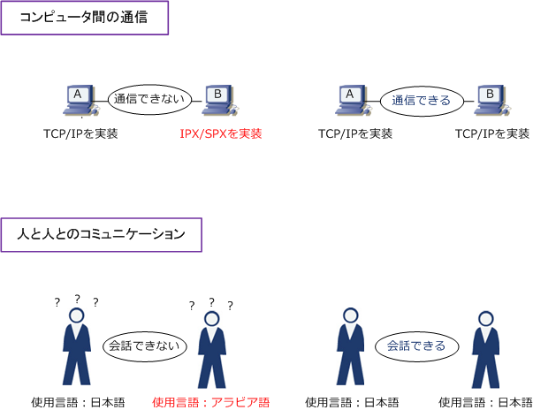

Network - Protocol
プロトコルとは
プロトコルとは、コンピュータなどの機器同士で通信を行うために取り決められた約束ごとを意味します。 約束ごとは「コンピュータ間でどのようにデータを送るのか、どれだけのデータを送るのか」ということ。 コンピュータ間をただLANケーブルなどで物理的に接続しただけでは、相互に通信することができませんが このプロトコル（具体的にはIPやTCP等）を使用することで、コンピュータとコンピュータが通信できます。
プロトコルスタックとは
コンピュータ間の通信において使用されるプロトコルは１つではなく、役割の異なる複数のプロトコルを 使用しています。例えば、現在見ている当方のWebサイトを閲覧するためには、IP、TCP、HTTPなどの プロトコルを使用しています。Webブラウザを使用してWebサイトの画面を見るためにHTTPが使用され ていますが、その下の階層ではTCP、さらにその下の階層ではIPが使用されています。このように、通信 に必要な複数のプロトコルを、階層構造で構成するプロトコル群のことをプロトコルスタックと言います。
多くの種類があるプロトコル
プロトコルには数多くの種類があります。そして数多くのプロトコルの体系があります。現在最も主流な 通信プロトコルといえばTCP/IPです。TCP/IPはLAN、WAN、インターネットなどで最も使用されている プロトコルです。TCP/IPといっても、通信する際にTCPとIPだけを使用する訳ではありません。その他に UDP、FTP、Telnetなどの数多くのプロトコルを使用しますが、それらを総称してTCP/IPと呼んでいます。
| 通信プロトコルの体系 | 使用されるプロトコルの例 | 主な用途 |
|---|---|---|
| TCP/IP | IP, ICMP, TCP, UDP, SMTP, HTTP.... | 全てのネットワーク |
| IPX/SPX | IPX, SPX, NCP.... | Netware OS環境のLAN |
| AppleTalk | AARP, DDP, RTMP, AEP..... | Mac OS環境のLAN |
コンピュータ間で通信をするために
コンピュータとコンピュータとが通信するためには、同じ体系の通信プロトコルを使用する必要があります。 例えば、下図においてコンピュータAがTCP/IP対応の通信プロトコルを使用しているならコンピュータBも TCP/IPプロトコルを使用していないとプロトコルが異なる（約束ごとが異なる）ので相互に通信できません。 ※ 例えば、人と人がコミュニケーションする際に、日本人同士なら日本語を使用しないと会話が成立しない事と同様のことです。

私がネットワークエンジニアに成り立ての頃、TCP/IPだけでなくIPX/SPXなどについてもマスターする 必要があるネットワーク状況だったのですが、現在では、TCP/IP以外は、ほぼ使用されていませんので ネットワークエンジニアとして仕事をする上でも、ネットワーク試験の資格を取得する上でも、TCP/IP さえマスターしていればネットワークエンジニアとしてOKです。TCP/IPはそれくらい主流なプロトコル。
プロトコルの標準化を推進する機関
従来はプロトコルを策定する主体は、ネットワーク機器製品を製造するハードウェアのメーカーでした。 しかし、ネットワークシステムが普及すると異なるメーカー機器同士の接続が重要になりました。そこで プロトコルを国際機関で管理して標準化する流れが強まりました。
国際的に標準化されたプロトコルを採用しているネットワーク機器である場合、他社メーカーの通信機器 であっても相互にネットワーク通信をすることが可能です。現在、プロトコルの標準化を推進する機関に 以下のような機関があります。
| 標準化の機関 | 正式名称 | 説明 |
|---|---|---|
| ISO | International Organization for Standardization | 国際標準化機構、国際規格の策定が目的。 |
| ITU | International Telecommunication Union | 国際電気通信連合。無線通信と電気通信の標準化。 |
| IETF | The Internet Engineering Task Force | インターネット技術の標準を策定。RFCを発行。 |
| IEEE | Institute of Electrical and Electronics Engineers | 世界規模の電気工学・電子工学の学会。 |
| ANSI | American National Standards Institute | 米国国家規格協会。米国内の工業分野の標準化組織。 |